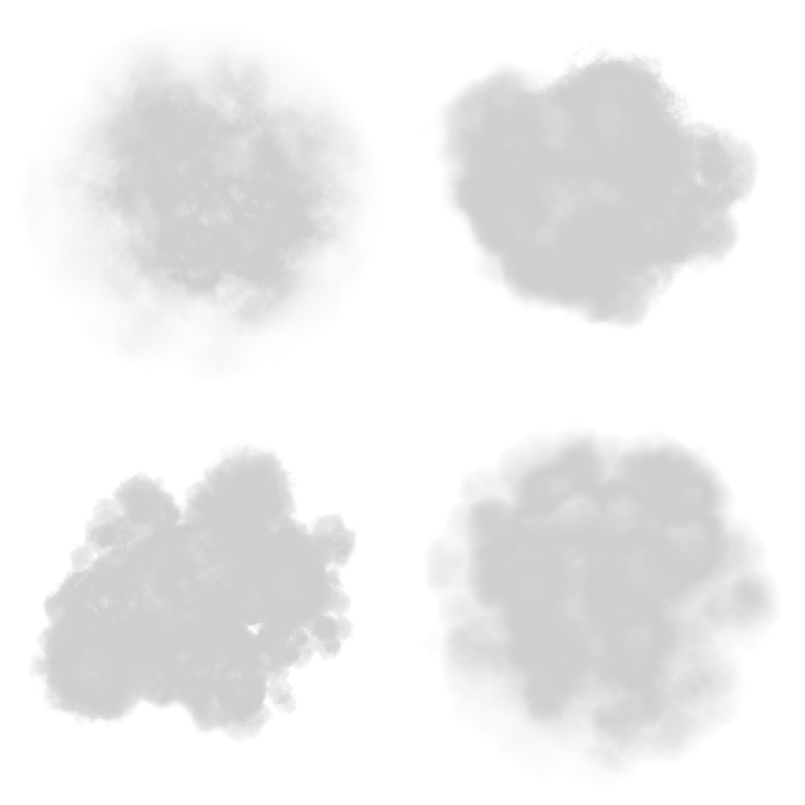
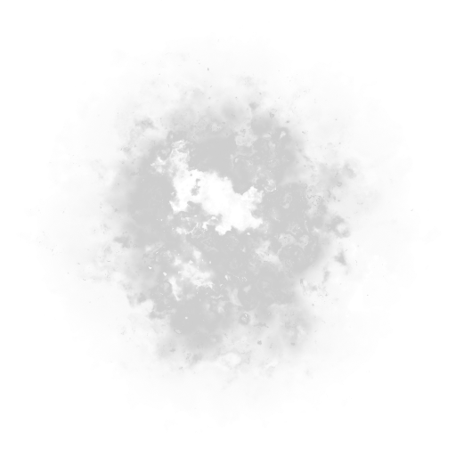
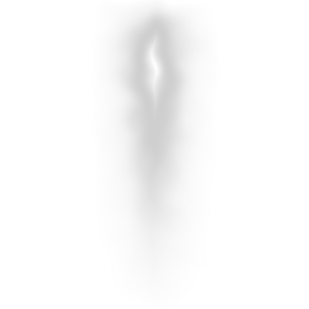

2026-10-15 · 保留原始来源、读过的内容与复用许可。下列来源与实际阅读记录整理于V3阶段；V4–V8继续使用其方法与许可依据。学习支持不等于源项目全部功能已实现。
V8：起遁、巡航衔接与到达
两条独立短时路线：聚光旋带→推出扩散环，轴向卷入→回卷收光。启动时停位蓄势再加速，结束时减速停发，世界尾迹按自身寿命消散；已有八项巡航形式保持。旋带阶段演示 · 旋流阶段演示 · 关键帧 · 连续阶段对照。
本轮优先访问Shadertoy，但内置浏览器实际停在Cloudflare验证，未读取Common、Buffer、Image或通道，未复制作品代码或确认作品许可；不将搜索结果外壳当作算法证据。实现基于已有视频观察与独立参数曲线、事件年龄窗、平滑加减速公式。没有新模型、外部贴图、真实折射或流体解算。
V7：扇形流霞
原来的局部硬扇面改为世界历史中的开放纱流：集中根部、两侧错位后展、不同长度与软碎边，少量长散丝延续后尾。与V6液光的长流绸、羽状V3的密集分叉分别保留。新旧静帧 · 巡航／急转／停飞对照 · 阶段关键帧。旧扇流算法为V4，持续沿用至V6页面，因此对照标为V4/V7。
本轮沿用Riot的方向与层级、Catlike Coding流动遮罩、独立发光合成方法，新增几何和GLSL为原创；未新增外部纹理、模型或流体求解。十份基础脚本与前版一致，烟、羽状V3、赤焰、长虹、双流、液光和碎芒保留。起遁与到达见V8阶段入口。
V6 第二批：液光流绸与碎芒汇流
水流改为不等宽、逐龄展开的连续透明长片，配少量细丝与老尾水滴；碎芒沿历史路径出生，各有短余迹和独立消散。五项既有效果保留，水流与碎芒可切 V5 / V6 同参数对照。静帧对照 · 动态对照 · 运动关键帧。
本轮沿用已核查的方向性与亮度层级、纹理流动、独立发光方法；表面高光和噪声条纹只是液光近似，不是背景折射、焦散求解或流体模拟。碎片短迹取各自过去位置。未新增外部素材或模型。
V5 第一批：长虹与双流
集中长虹与不对称双股连续尾流，沿用已有方向性、主次层级与侵蚀学习方法；红黑离烟、羽状 V3 与赤焰保留。同场景对照 · 动态对照。第二批水膜与碎芒见上方；扇流已进入V7，起遁/到达已进入V8独立阶段。
接缝修补：光带端部渐隐、取消整排切洞、水膜与旋涡共享顶点连续化；保留 V3 形态及烟火默认。近景修前后对照 · 六形关闭 Bloom 对照。
保留效果与历史 V4 实验
用户指出红黑烟与赤焰 V4 退化，现已恢复 V3 为默认；V4 通过每族独立版本选择保留为实验。羽状分叉 V3 仍独立保留，开放流羽 V4 另存。默认烟为纹理烟团，实验烟才使用程序密度积分；没有流体求解。回退同场景对照 · 连续采样
V3 阶段建立的学习基础
Kenney CC0 烟密度与侵蚀素材，双相流动遮罩，独立 HDR 发光缓冲、三尺度分离模糊，浓淡/粗细分层，以及纯程序几何的密集羽丝、火舌、光膜。优化后置，先检查轮廓、主次亮度、色彩与运动。
本轮材质数据默认较密，数量控制有真实消费者；不是电影精确复刻或 Forge 实机成果。没有加入人物、武器、鸟或飞舟模型。

smoke-atlas.png
erosion.png
flow-streak.png素材来源 · Kenney 原许可
P0 · riot-clarity
先把效果的大轮廓、朝向与主次亮度做清楚，再加入中小细节；尖头与衰减尾端即使在静帧也应传达前进方向。高亮与高饱和集中在值得注意的区域，不把每层都推到白。
用于迭代：白蓝羽丝：亮核最细最亮，少数主枝次亮，宽烟纱最低对比；红黑烟遁：暗烟大形与少量红色发射区分。保留彩色、灰度、无 Bloom 三种截图审阅。
实际阅读与授权
- The Unbreakable Vows: gameplay / hierarchy / noise
- Silhouettes: primary characteristic and facing direction
- Abilities: bright/saturated attention hierarchy
- Ability Considerations / Direction: projectile tail blur
- Skins / Abilities and Maps
网页未核实开放复制许可；阅读链接与原创总结，不能把 Riot 游戏图、视频、材质当可复用资产。
2017 VFX Style Guide 的官方 Nexus 页面与原 PDF URL 本次均重定向首页；本条是已读的一手替代文章，不能标记旧 Style Guide PDF 已读。
P0 · catlike-flow
RG 流向由 0..1 解码到 -1..1；双相 UV 采样以半周期错相，并用互补三角权重相加，避免单一 frac 回绕跳变。噪声可偏移局部时间；flow strength 与周期速度分别调。
用于迭代：在长条带的沿程 U / 横向 V 中加入小幅卷动，不让整个轮廓变形为均匀圆管。白蓝烟纱以两个相位的同一遮罩交替，烟层另外做低频扭曲和细频侵蚀。
实际阅读与授权
- Flow Direction / Flow Maps
- Sawtooth / Triangle Wave / Seesaw: phase A/B and complementary weights
- FlowUVW final function: flowOffset / tiling / phaseOffset / jump
- Flow Speed and Flow Strength
- Code & Asset License and Tutorial License
官方现行许可：代码、纹理及教程工程文件 MIT-0；教程正文、截图、图表、动画和 PDF 为 CC BY-NC-SA 4.0。
本次未下载作者 Unity 工程或纹理；已读函数与许可可指导原创 GLSL 移植。UV 扭曲不等于背景折射，也不等于三维流体平流。
P0 · kenney-particle
现成的软烟密度、细节侵蚀、细长亮丝和光芒遮罩比少面多边形团块更适合气态表现；可由 Shader 改色、拉伸、扰动、分层。
用于迭代：当前运行将 smoke_01 / smoke_07 / smoke_08 / smoke_04 合成烟图集，fire_01 用作侵蚀，trace_05 用作流丝遮罩；其余精选图保留作学习候选。主尾迹仍按真实历史曲线绘制，不能只在发射位置后面贴静态长图。
实际阅读与授权
- 官方资源页：512×512 / 80 files / CC0
- 下载归档 License.txt 全文
- PNG (Transparent) 80 张及 Rotated 16 张的接触表
- 逐张原图 smoke_07.png / fire_01.png / trace_05.png
官方页和归档 License.txt 均为 CC0，可用于个人及商业项目，署名非强制。本次仍保留原许可、作者与来源。
官方页面 80 指基本形状数；归档还有黑底版、透明版、旋转变体和预览，不把副本算作新特效。单张变体不是经确认的连续 flipbook。
P1 · kenney-smoke
黑烟、白雾与发射火光是三种不同的密度/颜色职责；烟雾保留内部灰阶和柔边，少量闪光承担亮核。
用于迭代：本包已下载、查看并保留作后续素材候选，尚未直接接入运行；当前烟图集来自 Particle Pack。后续可用 Black smoke 做暗色低发射主层、White puff 做低 alpha 气态次层；避免将 Explosion 或 Flash 等亮铺满。
实际阅读与授权
- 官方资源页 CC0
- 归档 license.txt 全文
- PNG 下 Black smoke / White puff / Explosion / Flash / Fart 各组接触表
官方页及归档 license.txt 均 CC0，可用于个人及商业项目；保留来源记录。
官方页标 70 files；当前归档 PNG 文件夹实际是 25 黑烟 + 25 白烟 + 9 爆炸 + 9 绿烟 + 9 闪光。编号及相似轮廓不能证明是连续时间帧。没有将这些静态变体宣传为真实模拟 flipbook。
P0 · three-hdr-bloom
窄亮核和扩散光晕由两个职责产生：HDR 发射保留大于 1 的亮度；多尺度模糊产生近场亮晕、柔和远场辉光。宽几何条带无法替代屏幕 Bloom。
用于迭代：来源实现采用 5 级模糊；当前 V3 实际采用独立发射缓冲和三尺度横纵模糊/合成。HDR 颜色在线性空间累积，再统一 tone mapping 和输出转换。只有遁光的 emission 进入 Bloom，烟密度不无条件送入。
实际阅读与授权
- UnrealBloomPass.js: HalfFloatType / nMips=5 / renderTargetsHorizontal + Vertical
- kernelSizeArray=[6,10,14,18,22] / _getSeparableBlurMaterial
- bloomFactors=[1,.8,.6,.4,.2] / _getCompositeMaterial / lerpBloomFactor
- render: bright pass / horizontal+vertical blur / compositing
- LuminosityHighPassShader: smoothstep(luminosityThreshold, luminosityThreshold+smoothWidth, luminance)
- 固定提交 LICENSE 全文 MIT
MIT；保留 three.js 版权和完整许可。数学参考可原创实现，直接复制/改编代码时包含许可。
此为新增 Bloom 具体实现阅读；已有研究中的 three.js Curve 是不同文件和算法。WebGL 半浮点 FBO 与硬件扩展仍须检查；这不是 Minecraft Forge 已验证的接入。
P1 · godot-particle-atlas
发射时随机相位、寿命进度和帧速度独立；图集的行列选择与循环/终止方式显式定义；billboard 只负责烟层朝向，主历史曲线继续保留三维结构。
用于迭代：先用 Kenney 单帧变体构建烟层，固定 seed 的出生角度、旋转和相位；将来有合法连续序列时再接年龄驱动图集。需要帧间混合时自行添加相邻两帧采样，已读这段本身是 floor 选帧，并未实现平滑帧间混合。
实际阅读与授权
- BaseMaterial3D::_update_shader: BILLBOARD_PARTICLES / MAIN_CAM_INV_VIEW_MATRIX
- material.cpp L1249: particle_frame = floor(INSTANCE_CUSTOM.z * particle_total_frames); clamp vs mod; atlas UV
- ParticleProcessMaterial::_update_shader: CUSTOM.z = params.animation_offset + lifetime_percent * params.animation_speed
- material.cpp: BLEND_MODE_PREMULT_ALPHA and particle animation properties
- 同 tag LICENSE.txt 与源码文件头 MIT
Godot 引擎此 tag 文件头和 LICENSE 均 MIT；移植/改编代码保留许可。第三方纹理与 demo 素材不自动继承此结论。
未运行 Godot；官方 stable 文档有些路径 404 或后续 403，因此核查以可访问的固定 tag 源码为准。不引入 Godot 引擎或人物/法器模型。
P0 · nvidia-vulcan-fire
火和烟不要全部加法；当每层都高强度相加时，色彩与内部层次会消失。变体、错相、尺度/消散差异能减少贴图重复。年轻粒子与发射器较紧，年老粒子脱离；该机制需与真正世界历史尾迹分工。
用于迭代：赤焰用连续的方向性主火舌 + 较软 alpha 烟纱 + 少量高发射核；尾部有不同寿命和旋转速度。与人物绑定的局部新生层渐退，已经写入世界历史的尾迹不重新拖着走。将 Bloom 与背景 heat shimmer 分开开关。
实际阅读与授权
- 6.1 procedural / 2D distortion / video-textured sprites 的取舍
- 6.2.1 自制 smoke generator 和 rolling motion
- 6.2.2 体量、位置、寿命、动画起帧和透明度变化
- 6.2.3 volume texture 的帧间插值
- 6.2.4 alpha blending 与加法发白问题
- 6.3 age-weighted emitter binding
- 6.5.1 Glow / 6.5.2 Heat Shimmer / Example 6-1
- 页面 Copyright / All rights reserved
网页 Copyright © 2004 NVIDIA Corporation / All rights reserved；本次未核实配套 CD demo/素材的独立复制许可。仅概念阅读、链接和原创总结，不搬运视频火焰或示例 shader。
2004 的显卡限制和性能数字不能外推本次。章节把 3D 纹理用于时间帧，不等于三维密度体积；此区别在实现时必须保留。
P2 · unity-vfx-toolbox-license
序列重定时、循环拼接和图集组织是独立的制作工序；不是只把若干静态烟形按编号排列就得到自然动画。
用于迭代：本轮只借鉴工作流程；需要序列时可用原创 Python/Pillow 重排自制或已授权帧，材质端读图集。
实际阅读与授权
- README: Image Sequencer / retiming / loop / assemble flipbook sheets / reusable templates
- LICENSE.md: Unity Companion License for Unity-dependent projects
Unity Companion License，明确面向 Unity-dependent projects；不能写成 MIT，不能当无条件可移植到 Forge 的通用库。
未下载工具、未运行 Unity、未核查完整 Companion License 的全部情形；本项目不复制该库代码。